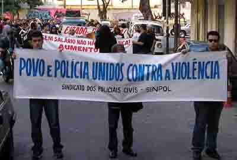

O Ricardo Aldana é editor do Blog RA1, que trata de assuntos inerentes à desenvolvimento e gestão de recursos humanos e empresarial. Nada a ver com o conteúdo do Caso de Polícia não é ? Será mesmo ?Ele deixou um comentário no artigo "Lula e Cabral e Polícia e estamos ferrados", narrando um episódio em que precisou dos serviços de investigação da Polícia Civil e recebeu um tratamento inesperado, ineficiente e insensível (palavras minhas), mas compatível com a filosofia dos últimos e do atual governador do Rio.
No comentário ele pescou bem a filosofia aplicada neste site, a proposta de debates entre policiais que amam sua profissão e a população em geral que sempre se desaponta quando precisa dos serviços de segurança estatais. O que acontece é que, tal como futebol, as mesas de bar são recheadas de discursos e críticas aos órgãos policiais, baseados em experiências empíricas ou impressões implantadas pela imprensa. Mas o que existe por trás de tudo isso, será que é de fato tão genérico?
Vou me concentrar no conteúdo do comentário. O Ricardo sofreu uma extorsão por telefone, um crime muito comum no Rio e que agora atinge todo o Brasil.
Aqui em casa já houveram diversas dessas ligações. Um homem passou a ligar repetidas vezes, sempre a cobrar, dizendo que estava de olho na casa, que sabia tudo da minha vida, etc. Nunca me preocupei muito, e sempre desligava em seguida. Mas uma noite, eu dormia na casa dos meus pais, e por volta de 3:00 horas meu pai entrou no quarto ofegante, e eu acordei, ele estava apavorado e aliviado. Recebera uma ligação, onde um homem gritava desesperado "pai, pai, eles me pegaram, socorro" e depois um sujeito começava a falar que tinham me seqüestrado.
Por sorte nossa eu estava na casa dele este dia, poderia ser pior já que ele tem problemas cardíacos. E se eu não estivesse? Ele teria sangue frio para me telefonar antes de fazer tudo que o interlocutor mandava? E se ele telefonasse e eu não atendesse ou estivesse com o celular sem bateria?
Não registrei nenhuma das situações na Delegacia, apesar de saber que era minha obrigação enquanto cidadão, porque como foi dito ao Ricardo, não vai dar em nada. E em quase 90% das vezes não dá em nada mesmo! Mesmo sendo eu ou meu pai a vítima, não vou ter meios nem vou poder abandonar outras investigações para resolver isso de forma pessoal. Aquele criminoso vai continuar fazendo aquilo, mas com o tempo aprendemos a nos conformar. O Estado quer assim.
O policial que o atendeu teve uma conduta que infelizmente é praxe nas DPs. O próprio policial sabe que não vai ter como chegar a autoria dentro da realidade em que trabalha. E aliado à isso, mostrou-se extremamente insensível, cínico e um péssimo profissional, ou seja, refletiu detalhadamente a postura que o próprio Governo tem com seus servidores.
Cada policial que faz o primeiro atendimento nas chamadas "Delegacias Legais" trabalha da seguinte maneira. Dá um plantão de 24 horas de trabalho, e folga por 72 horas, o que dá 48 horas semanais. Nessas 24 horas, ele registra crimes comunicados pelas vítimas, uma média de 8 registros por cada policial no plantão, sendo que em algumas DPs como Campo Grande e Barra da Tijuca esse número chega ao dobro. Para se fazer um RO no sistema informatizado da Delegacia Legal, gasta-se em média 1 hora para crimes mais simples, e até 3 horas ou mais para ocorrências mais detalhadas. Durante este mesmo plantão, o policial também recebe pessoas que foram intimadas para deporem sobre ocorrências registradas nos plantões passados. Quando uma investigação tem indícios suficientes, instaura-se um Inquérito Policial, que é a continuação da investigação agora já direcionada ao Ministério Público, com prazos mais curtos e maior cobrança.
Em média então temos o seguinte: o policial "ganha" 8 investigações por plantão, que se somam às 200 acumuladas dos plantões anteriores e mais 300 Inquéritos Policiais. Em média poucas investigações são efetivamente resolvidas, algumas são suspensas imediatamente, como roubo de carro onde a vítima não consegue descrever os autores. É verdade, seu carro é roubado mas ninguém vai tentar descobrir a identidade do criminoso!
Somado à isso, temos que fazer a autuação de Flagrantes (consome no mínimo 3 horas de trabalho cada) de pessoas presas pela PM ou pela Civil. Temos que levar o preso para uma carceragem da Polinter. Temos que ir para rua para intimar pessoas para deporem nas nossas investigações que se acumulam, encaminhar objetos à Perícia, responder ofícios, cumprir mandados de prisão, cumprir mandados de busca e apreensão, prestar depoimento na Justiça (perde-se o dia todo), dentre diversas outras obrigações.
Então, está lá esse policial, assoberbado de serviços, mas ainda assim recebendo novas tarefas. Talvez preocupado com algum fato particular, problemas de saúde, ou com o "bico" de segurança que fará ao sair do plantão. Ou mesmo está sem dormir porque foi direto do "bico" para o serviço. Ouve críticas e problemas das vítimas o dia inteiro, ninguém vai à uma Delegacia porque está feliz. E terminado o plantão ele vai embora, e suas investigações vão ficar paradas por 3 dias!
A escala de serviço aplicada é totalmente irracional, apesar do servidor trabalhar mais do que as 44 horas semanais, máximo permitido pelas leis trabalhistas, seu trabalho simplesmente não rende. Investigações têm que ser contínuas, não tem hora para começar nem para terminar. Só que com essa escala, o policial pode arrumar um segundo emprego, de onde vai tirar sua renda principal, e o Governo não precisa então pagar bem. Tudo perfeito, finge-se que trabalha, finge-se que paga. Só é preso quem não pode pagar um bom advogado, o que isenta da prisão a classe média alta e classe alta, onde estão justamente os políticos e familiares destes. Onde funcionam suas empresas, as "lavanderias de dinheiro", e outras coisas mais.
Tudo que foi dito, explica mas não justifica o péssimo atendimento dado pelo policial. Tem que haver comprometimento com o serviço, mas mesmo sendo um crítico ferrenho, sou obrigado a entender que eu sou uma exceção, tenho razoáveis condições financeiras graças à educação que tive e ao trabalho dos meus pais. Não tenho filhos, então não posso me colocar como parâmetro para cobrar mais dos colegas. Mas posso cobrar do Estado, afinal a culpa é dele, personificado pelos (des)governantes que vêm passando.
A proposta é essa Ricardo, ficou difícil não deixar o post muito extenso, na verdade poderia dividi-lo em 3 ou mais posts, e vou fazer isso em breve, entrar mais ainda em detalhes. Textos extensos raramente são lidos, portanto o objetivo é sintetizar pois queremos ser ouvidos. Como vê, o que você sofreu não foi um caso isolado, acontece toda hora em todas as DPs, estou aqui para denunciar esse lado péssimo da Polícia Civil, não para dissimular. Isso é uma das coisas que vimos buscando, mas que para variar passa pela questão salarial: a escala de trabalho da polícia investigativa (Polícia Civil) não pode ser gerida como a da polícia preventiva (Polícia Militar). Mas para o Governo assim é mais fácil.
Por fim, fiquei muito empolgado com a manifesta intenção de participar desse processo de reestruturação das polícias, e com a demonstração de que não é só um pequeno grupo de policiais que se preocupa com isso. A Segurança Pública não é só um direito, é também um dever de todos!